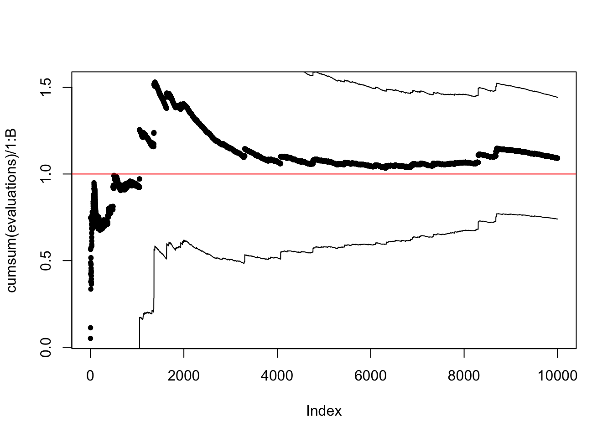
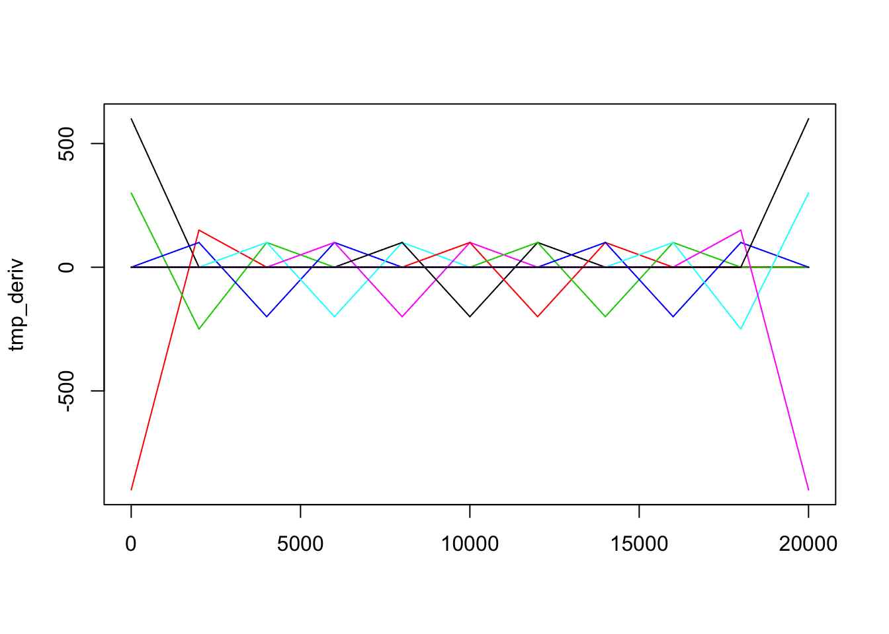
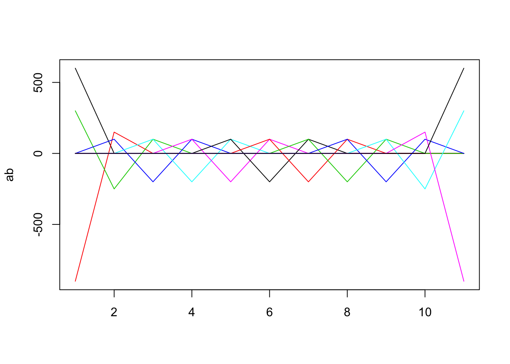

3.5 Splines
The minimizer of \[\text{RSS}(s) = \sum_{i=1}^n (y_i - s(x_i))^2 + \lambda \int s''(t)^2 \mathrm{d} t\] is a cubic spline
with knots in the data points \(x_i\), that is, a function \[f = \sum_i \beta_i \phi_i\] where \(\phi_i\) are basis functions for the \(n\)-dimensional space of such splines.
Cubic splines are piecewise degree 3 polynomials in between knots.
In vector notation \[\hat{\mathbf{f}} = \boldsymbol{\Phi}\hat{\beta}\] with \(\boldsymbol{\Phi}_{ij} = \phi_j(x_i)\), and
\[\begin{aligned} \text{RSS}(\mathbf{f}, \lambda) & = (\mathbf{Y} - \mathbf{f})^T (\mathbf{Y} - \mathbf{f}) + \lambda \int_a^b s''(t)^2 \mathrm{d} t \\ & = ( \mathbf{Y} - \boldsymbol{\Phi}\beta)^T (\mathbf{Y} - \boldsymbol{\Phi}\beta) + \lambda \beta^T \mathbf{\Omega} \beta \end{aligned}\]with \[\mathbf{\Omega}_{ij} = \int \phi_i''(t) \phi_j''(t) \mathrm{d}t.\]
The minimizer is \[\hat{\beta} = (\boldsymbol{\Phi}^T \boldsymbol{\Phi} + \lambda \mathbf{\Omega}_N)^{-1}\boldsymbol{\Phi}^T \mathbf{Y}\]
with resulting smoother \[\hat{\mathbf{f}} = \boldsymbol{\Phi} ((\boldsymbol{\Phi}^T \boldsymbol{\Phi} + \lambda \mathbf{\Omega})^{-1}\boldsymbol{\Phi}^T \mathbf{Y}.\]
Smoothing splines are linear smoothers. The basic function in R for computing a smoothing spline is smooth.spline. It automatically uses LOOCV (or GCV if requested) for optimizing the parameter \(\lambda\), but one can also manually specify the degree of smoothing using the arguments spar or df (the latter being the trace of the smoother matrix).
Note that smooth.spline “cheats” by default and uses only a subset of the \(x_i\)s as knots for \(n > 50\) unless all.knots = TRUE.
The result is an object of class smooth.spline. The lev entry contains the diagonals of the smoother matrix.
The gam function from the mgcv package produces a penalized spline fit, where the smoothing parameter is selected by GCV by default. The function does not attempt to implement smoothing splines exactly, but it provides a vastly more general framework for smoothing via generalized additive models and spline basis expansions.
One hurdle is the computation of the matrix \(\Omega\). The slides do not explain exactly how to compute this matrix in practice using the splineDesign function. The problem is the boundaries. It is true that there is an \(n\)-dimensional basis that spans the space of splines solving the optimization problem. It may, however, be more convenient to work with a slightly larger space. If the knot sequence consists of the sequence of data points with the smallest and largest point each replicated 3 times then the resulting basis is \((n+2)\)-dimensional, and you can use this basis.
The splineDesign function can be used to evaluate the second derivatives of the basis functions (by specifying the knots as described above) in an equidistant grid, which can then be used to compute a Riemann-sum approximation of the integrals. This was the procedure I had in mind for the assignment. You can actually quite easily compute the integral exactly using Simpson’s rule. This is because the integrands are piecewise quadratic.
However, if you don’t want to go into any of this, you are also welcome to install the fda package, and then you can compute \(\Omega\) by
fda::bsplinepen(fda::create.bspline.basis(c(0, 1), breaks = seq(0, 1, 0.1)))## [,1] [,2] [,3] [,4] [,5] [,6]
## [1,] 12000 -16500 3500.00000 1.000000e+03 0.000000e+00 0.000000e+00
## [2,] -16500 24000 -6750.00000 -1.000000e+03 2.500000e+02 0.000000e+00
## [3,] 3500 -6750 4500.00000 -1.333333e+03 -8.333333e+01 1.666667e+02
## [4,] 1000 -1000 -1333.33333 2.666667e+03 -1.500000e+03 1.136868e-13
## [5,] 0 250 -83.33333 -1.500000e+03 2.666667e+03 -1.500000e+03
## [6,] 0 0 166.66667 1.136868e-13 -1.500000e+03 2.666667e+03
## [7,] 0 0 0.00000 1.666667e+02 6.821210e-13 -1.500000e+03
## [8,] 0 0 0.00000 0.000000e+00 1.666667e+02 0.000000e+00
## [9,] 0 0 0.00000 0.000000e+00 0.000000e+00 1.666667e+02
## [10,] 0 0 0.00000 0.000000e+00 0.000000e+00 0.000000e+00
## [11,] 0 0 0.00000 0.000000e+00 0.000000e+00 0.000000e+00
## [12,] 0 0 0.00000 0.000000e+00 0.000000e+00 0.000000e+00
## [13,] 0 0 0.00000 0.000000e+00 0.000000e+00 0.000000e+00
## [,7] [,8] [,9] [,10] [,11]
## [1,] 0.000000e+00 0.000000e+00 0.000000e+00 0.000000e+00 0.00000
## [2,] 0.000000e+00 0.000000e+00 0.000000e+00 0.000000e+00 0.00000
## [3,] 0.000000e+00 0.000000e+00 0.000000e+00 0.000000e+00 0.00000
## [4,] 1.666667e+02 0.000000e+00 0.000000e+00 0.000000e+00 0.00000
## [5,] 6.821210e-13 1.666667e+02 0.000000e+00 0.000000e+00 0.00000
## [6,] -1.500000e+03 0.000000e+00 1.666667e+02 0.000000e+00 0.00000
## [7,] 2.666667e+03 -1.500000e+03 -3.410605e-13 1.666667e+02 0.00000
## [8,] -1.500000e+03 2.666667e+03 -1.500000e+03 6.821210e-13 166.66667
## [9,] -3.410605e-13 -1.500000e+03 2.666667e+03 -1.500000e+03 -83.33333
## [10,] 1.666667e+02 6.821210e-13 -1.500000e+03 2.666667e+03 -1333.33333
## [11,] 0.000000e+00 1.666667e+02 -8.333333e+01 -1.333333e+03 4500.00000
## [12,] 0.000000e+00 0.000000e+00 2.500000e+02 -1.000000e+03 -6750.00000
## [13,] 0.000000e+00 0.000000e+00 0.000000e+00 1.000000e+03 3500.00000
## [,12] [,13]
## [1,] 0 0
## [2,] 0 0
## [3,] 0 0
## [4,] 0 0
## [5,] 0 0
## [6,] 0 0
## [7,] 0 0
## [8,] 0 0
## [9,] 250 0
## [10,] -1000 1000
## [11,] -6750 3500
## [12,] 24000 -16500
## [13,] -16500 12000library(splines)
knots <- c(0, 0, 0, seq(0, 1, 0.1), 1, 1, 1)
tmp <- splineDesign(knots, seq(0, 1, 0.005))
matplot(tmp, type = "l", lty = 1)
tmp_deriv <- splineDesign(knots, seq(0, 1, 0.00005), derivs = 2)
matplot(tmp_deriv, type = "l", lty = 1)
Omega0 <- crossprod(tmp_deriv) * 0.00005
ab <- splineDesign(knots, seq(0, 1, 0.1), derivs = 2)
ab_mid <- splineDesign(knots, seq(0.05, 0.95, 0.1), derivs = 2)
Omega <- (crossprod(ab) + 4 * crossprod(ab_mid)) * 0.1 / 6
Omega - Omega0## [,1] [,2] [,3] [,4] [,5]
## [1,] -9.001500 13.5026250 -4.501375e+00 2.500000e-04 0.000000e+00
## [2,] 13.502625 -395.2546875 6.317526e+02 -2.500006e+02 6.250000e-05
## [3,] -4.501375 631.7526250 -1.210585e+03 7.500008e+02 -1.666669e+02
## [4,] 0.000250 -250.0006250 7.500008e+02 -1.000001e+03 6.666673e+02
## [5,] 0.000000 0.0000625 -1.666669e+02 6.666673e+02 -1.000001e+03
## [6,] 0.000000 0.0000000 4.166667e-05 -1.666669e+02 6.666673e+02
## [7,] 0.000000 0.0000000 0.000000e+00 4.166667e-05 -1.666669e+02
## [8,] 0.000000 0.0000000 0.000000e+00 0.000000e+00 4.166667e-05
## [9,] 0.000000 0.0000000 0.000000e+00 0.000000e+00 0.000000e+00
## [10,] 0.000000 0.0000000 0.000000e+00 0.000000e+00 0.000000e+00
## [11,] 0.000000 0.0000000 0.000000e+00 0.000000e+00 0.000000e+00
## [12,] 0.000000 0.0000000 0.000000e+00 0.000000e+00 0.000000e+00
## [13,] 0.000000 0.0000000 0.000000e+00 0.000000e+00 0.000000e+00
## [,6] [,7] [,8] [,9]
## [1,] 0.000000e+00 0.000000e+00 0.000000e+00 0.000000e+00
## [2,] 0.000000e+00 0.000000e+00 0.000000e+00 0.000000e+00
## [3,] 4.166667e-05 0.000000e+00 0.000000e+00 0.000000e+00
## [4,] -1.666669e+02 4.166667e-05 0.000000e+00 0.000000e+00
## [5,] 6.666673e+02 -1.666669e+02 4.166667e-05 0.000000e+00
## [6,] -1.000001e+03 6.666673e+02 -1.666669e+02 4.166667e-05
## [7,] 6.666673e+02 -1.000001e+03 6.666673e+02 -1.666669e+02
## [8,] -1.666669e+02 6.666673e+02 -1.000001e+03 6.666673e+02
## [9,] 4.166667e-05 -1.666669e+02 6.666673e+02 -1.000001e+03
## [10,] 0.000000e+00 4.166667e-05 -1.666669e+02 6.666673e+02
## [11,] 0.000000e+00 0.000000e+00 4.166667e-05 -1.666669e+02
## [12,] 0.000000e+00 0.000000e+00 0.000000e+00 6.250000e-05
## [13,] 0.000000e+00 0.000000e+00 0.000000e+00 0.000000e+00
## [,10] [,11] [,12] [,13]
## [1,] 0.000000e+00 0.000000e+00 0.0000000 0.000000
## [2,] 0.000000e+00 0.000000e+00 0.0000000 0.000000
## [3,] 0.000000e+00 0.000000e+00 0.0000000 0.000000
## [4,] 0.000000e+00 0.000000e+00 0.0000000 0.000000
## [5,] 0.000000e+00 0.000000e+00 0.0000000 0.000000
## [6,] 0.000000e+00 0.000000e+00 0.0000000 0.000000
## [7,] 4.166667e-05 0.000000e+00 0.0000000 0.000000
## [8,] -1.666669e+02 4.166667e-05 0.0000000 0.000000
## [9,] 6.666673e+02 -1.666669e+02 0.0000625 0.000000
## [10,] -1.000001e+03 7.500008e+02 -250.0006250 0.000250
## [11,] 7.500008e+02 -1.210585e+03 631.7526250 -4.501375
## [12,] -2.500006e+02 6.317526e+02 -395.2546875 13.502625
## [13,] 2.500000e-04 -4.501375e+00 13.5026250 -9.001500matplot(ab, type = "l", lty = 1)
matplot(ab_mid, type = "l", lty = 1)